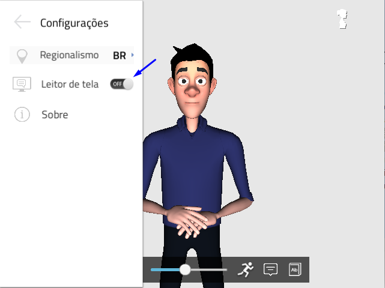

Leitor de Tela¶
A funcionalidade Leitor de Tela, a qual habilita o software ORCA, que é um software que executa a leitura da página que está em foco do computador do usuário e envia para o VLibras essa informação, facilitando a leitura da tela em LIBRAS.
Para selecionar o leitor de tela, deve-se clicar no botão Menu (☰), depois no botão Leitor de Tela.
Para desativar basta clicar novamente no botão Leitor de Tela.